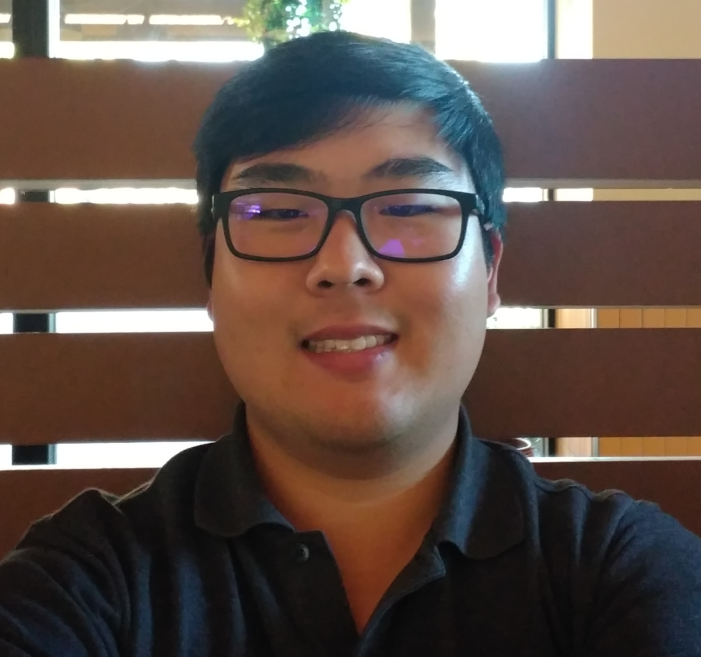

Benny Lee
About Me

My name is Benny and I live and work in Orange County. I attended the University of Southern California and graduated with a major in Ecnonomics, minor in Business-Technology, and speicalization in SAP. Previously, I was the office manager for Wilshire Cardiology Group located in Downtown Los Angeles. I am currnetly working at Meridianlink in Costa Mesa as a Technical Service Representative.
I have an interest in tennis, breakdancing, and tinkering with electronics. When it comes to the phones I am an Android fan and use Windows as my OS of choice. Recently, I enrolled in the Coding Bootcamp with UCI's Continuing Education program. My interest in coding and development arose during my work as I had to assist clients with integrating to our APIs. This is an early showcase of my work and hope you enjoy!
Connect With Me